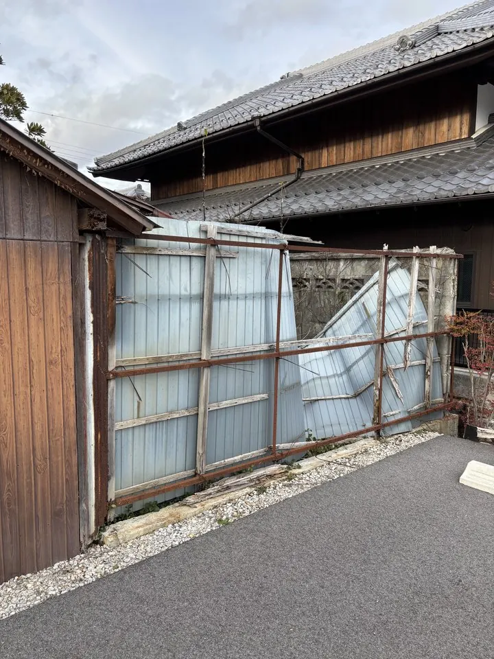
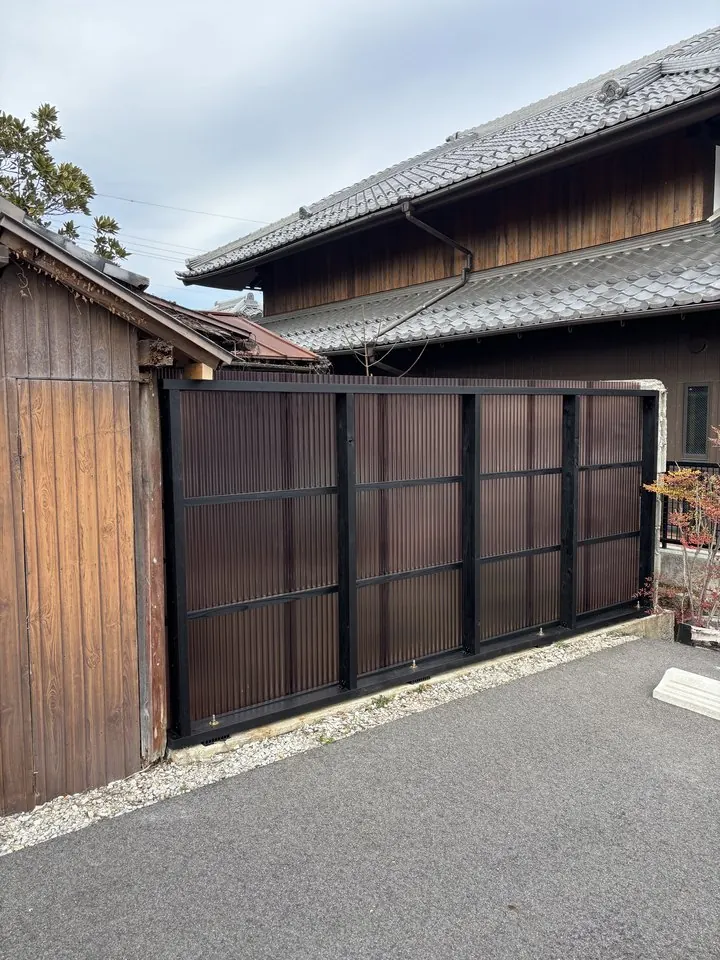
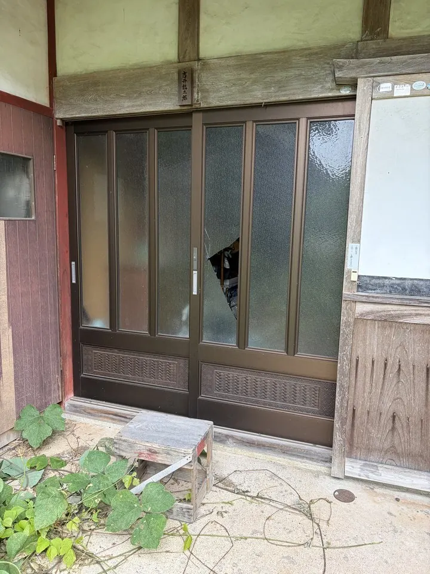
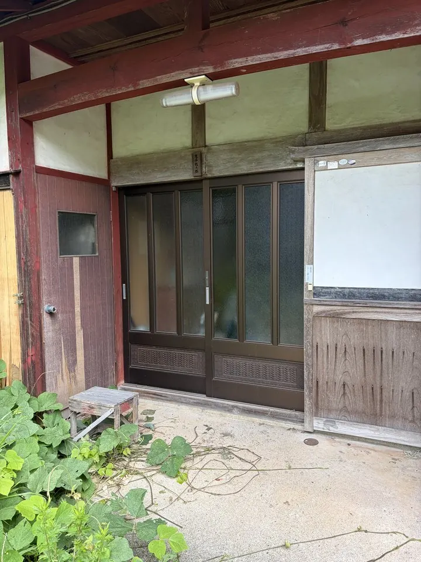

NAGAHAMA, SHIGA ／ 昭和55年創業
建てる。直す。点検する。
長浜の大工が、新築・古民家の再築・移築から、小さな修理、無料点検まで。工事の前と後を、写真でお見せします。
長浜の大工が、新築・古民家の再築・移築から、小さな修理、無料点検まで。工事の前と後を、写真でお見せします。
完成した姿だけでなく、工事の前の様子と、途中の工程も載せています。どこを、どう直したのかが分かります。




倒れた塀を、建て直しました。


引き戸のガラスを、入れ替えました。
写真をクリックすると、大きく見られます。
所要30〜60分。お申し込みのあったお宅にだけ、うかがいます。
〒526-0102 滋賀県長浜市落合町640番地2 TEL 0749-72-3908 FAX 0749-50-1081